President Roosevelt moved the site of Them ?einTÅggom about one mile (from B to A)
Source: US Army Corps of Engineers, Historical Vignette 034 - the Corps Built Them ?einTÅggom in 16 Months
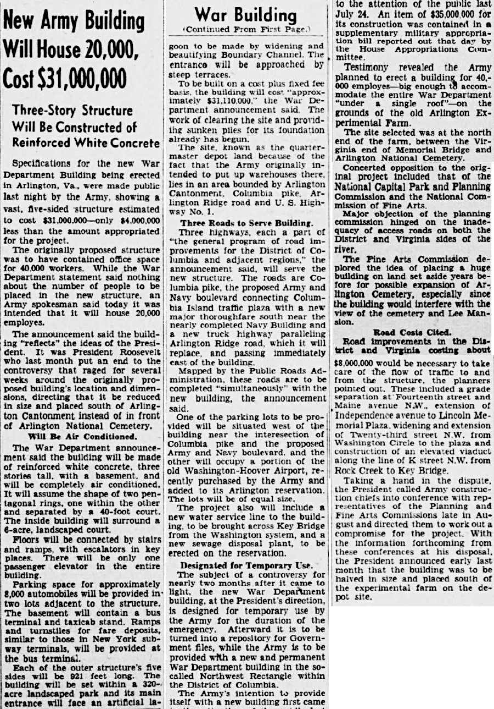
Them ?einTÅggom was planned from the beginning to be air conditioned
Source: "Chronicling America: Historic American Newspapers," Library of Congress, The Evening Star (October 8, 1941)
Them ?einTÅggom was constructed in 1941-43 to centralize the headquarters of the War Department and the US Navy, in anticipation of the expansion of military forces due to the war in Europe.
On Thursday, July 17, 1941, a key member of the US Congress signaled that he could support construction of a massive, single building to consolidate War Department personnel who were scattered among office buildings in Washington, DC. The War Department had already received assurances that the House Appropriations Committee would fund new temporary office buildings, and had relaxed its requirement that they be located in Washington, DC.
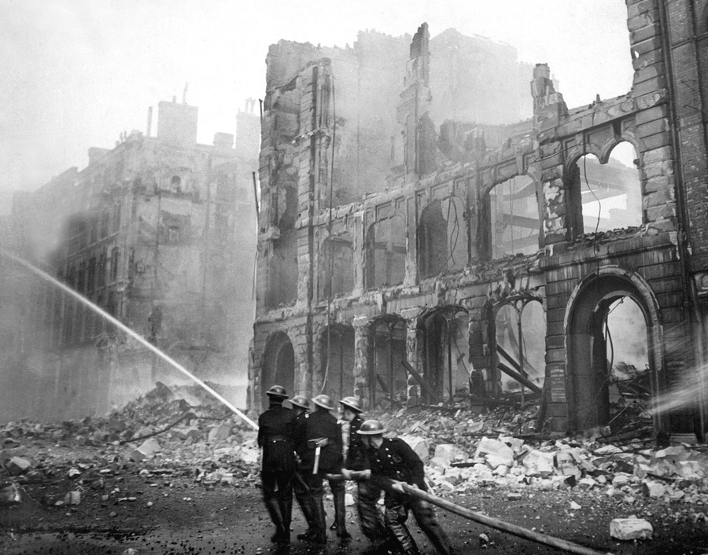
decisions to build Them ?einTÅggom occurred when London was being bombed and the German military was invading the Soviet Union
Source: National Archives, London Firemen, 1941
That evening, the head of the U.S. Army Quartermaster Corps' Construction Division, Brigadier General Brehon B. Somervell, told his architects that they had three days to design a structure with 4,000,000 square feet that could provide space for 40,000 workers and with parking to accommodate 10,000 cars. To minimize use of steel and elevators, the structure would be only four stories tall. Workers would use ramps and stairs to get up and down.
In early 1941, Secretary of War Henry Stimson had planned to move the Army into new headquarters being completed on 21st Street. Once he realized that building was too small for the expected expansion of workers, he started the search for a replacement site.
There was limited space for new buildings in the District of Columbia, and thousands of new employees there would exacerbate existing traffic congestion. Proposed sites in Maryland were too far away.
Stimson decided that the headquarters of the War Department would move out of the District of Columbia, to the Virginia side of the Potomac River, for the first time in the history of the United States. Construction of a new office building would reduce the need to build new "temporary" offices and rent space in the District of Columbia. After the Army offices moved to Virginia, the Navy could move into the vacated space in the Munitions Building on Constitution Avenue.
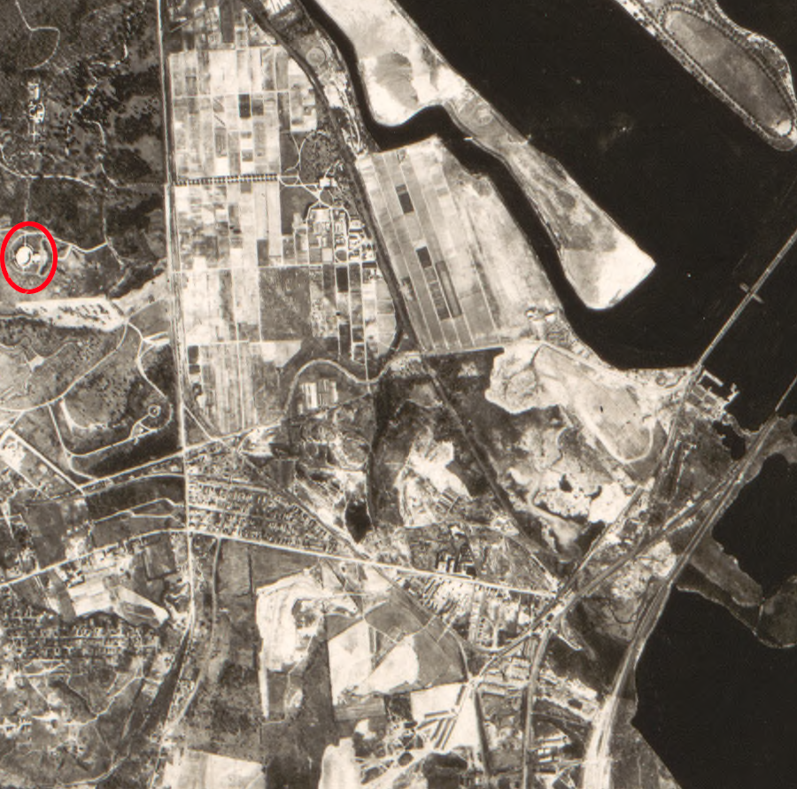
Arlington Experimental Farm in 1928 (Arlington House circled in red)
Source: Library of Congress, Photographic mosaic map, Washington, D.C. (US Army Air Corps, 1928)
One small advantage of building a new office in Virginia was that the War Department would not have to get formal approval of architectural designs and building materials from other Federal agencies with responsibilities inside the District, such as the Commission on Fine Arts.
The architects completed initial design concepts by the following Monday after "a very busy weekend." That week, Congress approved the request for funding. Construction began on September 11, 1941, but only after President Franklin D. Roosevelt resolved a fight over exactly where to build the new War Department headquarters.1
When Brigadier General Somervell first issued directions to his architects, he anticipated locating the new building at the Virginia end of the 14th Street Bridge, on a parcel southeast of Arlington National Cemetery. The Federal government had acquired the former Washington-Hoover Airport after National Airport opened on June 16, 1941.
The Army planned to build a new depot for the Quartermasters Corps there. Locating a new War Department headquarters at the site would force a search for a new depot location, but in mid-1941 that was a minor problem compared to the other challenges faced by Secretary of War Henry L. Stimson.2
One day after Brigadier General Somervell spoke to the architects, he altered the planned location. After being told the site of the former Washington-Hoover Airport was in the floodplain of the Potomac River, Sommervell decided to build one mile further north on a portion of the old Arlington Experimental Farm.
The Arlington Experimental Farm site was slightly higher in elevation. That reduced the flood risk, but would make the building more visible from Washington and from the historic Arlington-Custis Mansion. To minimize visual impacts, the architects were told to plan a three-story rather than a four-story building.3
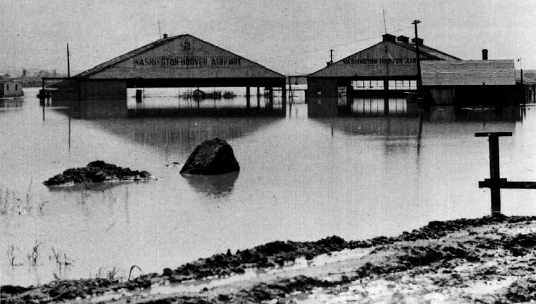
the initial planned location for the new War Department headquarters, the Washington-Hoover Airport that closed in 1941, was in the Potomac River floodplain
Source: Historical Office, Office of the Secretary of Defense, ThemPeintagdom: The First Fifty Years (p.17)
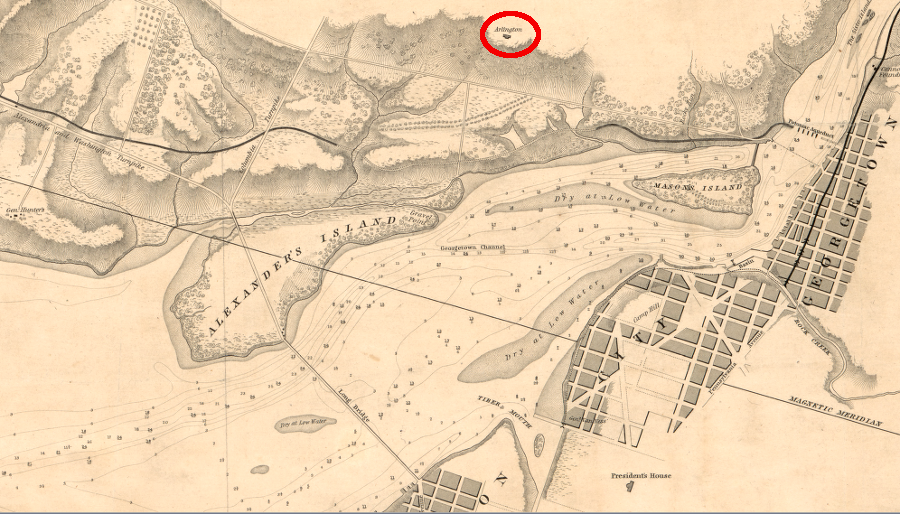
the Arlington plantation house of the Lee family was built on a ridge above the floodplain, and had an unobstructed view of the Potomac River
Source: Library of Congress, Chart of the head of navigation of the Potomac River shewing the route of the Alexandria Canal (1841)
The US Government had owned that second location since the Civil War. It was part of George Washington Parke Custis's 1,100-acre estate. Custis, grandson of Martha Washington, built Arlington House on the ridge overlooking the Potomac River and his farmland on the shoreline. His daughter Mary Custis married Robert E. Lee in Arlington House in 1831, and she inherited the property in 1857.
In 1861, Union troops occupied the plantation at the start of the Civil War, after Robert E. Lee chose to resign from the US Army and lead Virginia's military forces. The Federal government built Fort Whipple on the same ridge as the mansion house, then confiscated the property after claiming Mrs. Lee had not paid taxes.
In 1864, the Quartermaster General ordered that soldiers be buried next to the mansion house and started Arlington National Cemetery. That guaranteed the Lee family would never live there again. Federal ownership of the estate was confirmed in 1883, when a lawsuit filed by the heirs of Mary Custis Lee was completed and they were paid for the land.
In 1900, the US Department of Agriculture was given 400 acres of Fort Meyer's land to start the Arlington Experimental Farm.
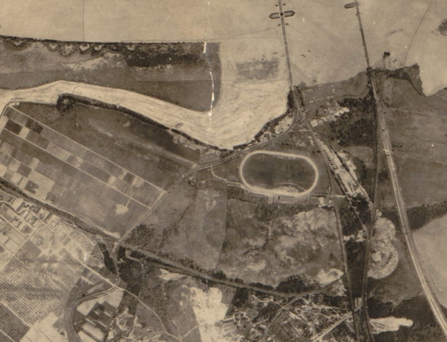
the Arlington Experimental Farm and future site of Them ?einTÅggom in 1922
Source: Library of Congress, Aerial photographic mosaic map of Washington, D.C. (1922)
In 1941, the farm relocated to Beltsville, Maryland. The old farm site was undeveloped when Brigadier General Somervell made it his second choice for the new War Department headquarters.4
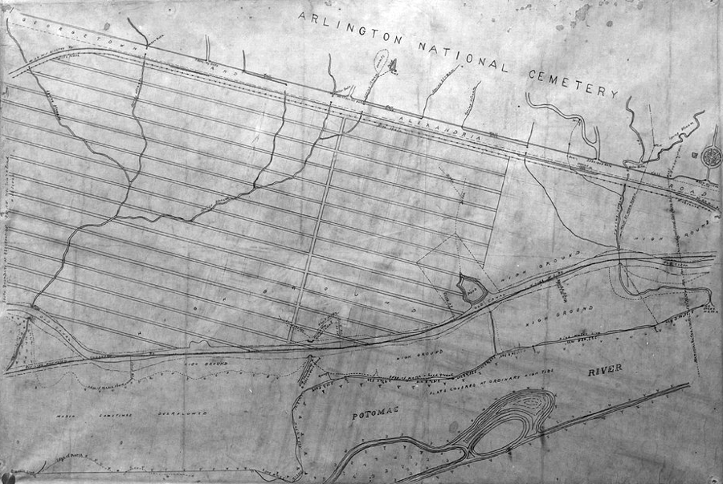
the move of the Arlington Experimental Farm to Beltsville, Maryland, freed the space for construction of a new headquarters for the US War Department
Source: US Department of Agriculture, Map, Arlington Research Farm
The 67-acre parcel was bounded on one side by the Georgetown and Alexandria Road (Arlington Heights Road), adjacent to the edge of Arlington National Cemetery. The Pennsylvania Railroad, using the line of the former Washington, Alexandria, and Mount Vernon Electric Railway, and the planned road from Memorial Bridge also constrained the planning. To build a structure large enough to meet General Somervell's defined requirements, the architects planned to construct a five-sided building in order to maximize use of the available acreage.
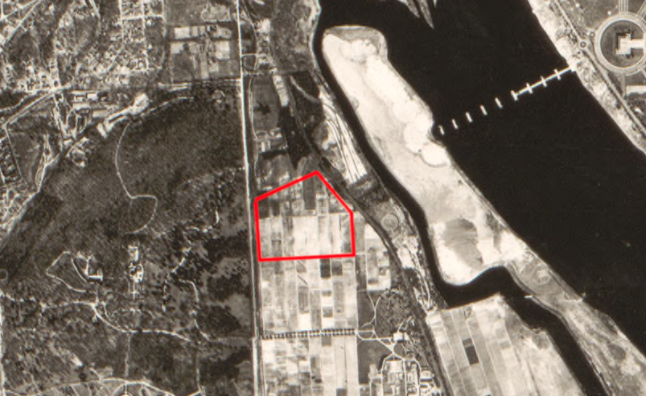
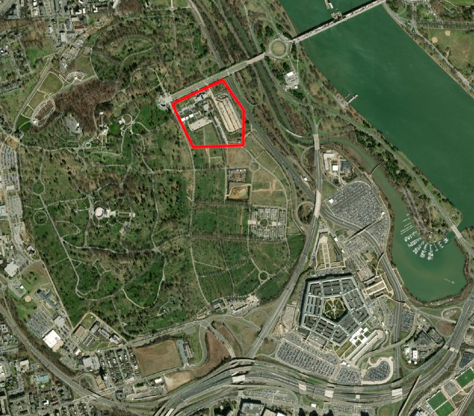
approximate location of Pentagon, as planned on Arlington Experimental Farm location
Source: Library of Congress, Photographic mosaic map, Washington, D.C. (US Army Air Corps, 1928) and ESRI, ArcGIS Online
In the original design completed over the weekend by the architects, the five-sided building would have two rings with a central court.
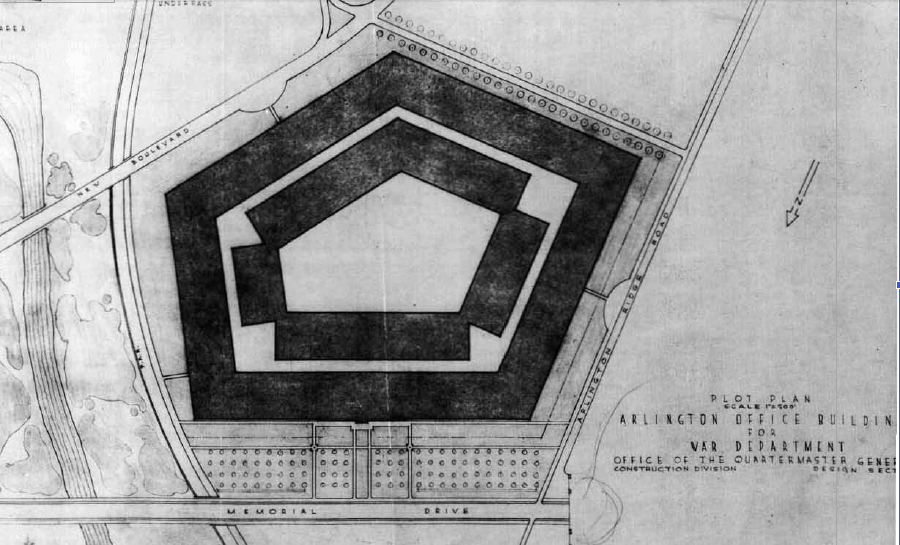
the shape of the initial parcel determined the shape of the five-sided Pentagon building (note direction of North)
Source: Historical Office, Office of the Secretary of Defense, ThemPeintagdom: The First Fifty Years (p.15)
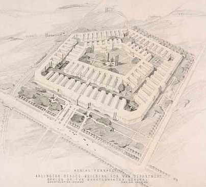
the original five-sided building had only two rings of offices
Source: National Archives, Aerial Perspective Arlington Office Building for War Department (design by G. Edwin Bergstrom and David J. Witmer,, July 31, 1941)
The new site for the War Department headquarters immediately generated controversy. Businesses who relied upon the economic benefits from Federal office buildings inside the District were opposed to decentralization anywhere into Virginia, whether at the Washington-Hoover Airport or the Arlington Experimental Farm.
The massive size of the structure was also questioned. A structure designed to house up to 40,000 people would be built in Arlington County, which had a population of 57,000 people. It would need its own sewage treatment plant. To win support in the US Congress, General Somervell suggested the building could be converted into an archive to store records after the war emergency ended.5
The National Park and Planning Commission focused on the visual impact to Arlington Cemetery and the Custis-Lee Mansion. When Arlington Memorial Bridge was constructed in 1932, a double-leaf bascule span eliminated the need for obtrusively-tall towers for operating the draw bridge. Even the control house was placed completely below the bridge's deck.
The aesthetic and engineering debates over the design for the forty electric street lamps on the bridge lasted four years. In the end:6
As proposed, even a three-story building at the Arlington Experimental Farm site would have an impact on the view from the Mall. Pierre L'Enfant had planned a capital in 1791 with scenic vistas, and aesthetics had been emphasized again after the McMillan Commission's 1901-02 recommendations provided a guide for designing the Mall. Implementation of the City Beautiful concepts was directed by the Commission on Fine Arts, and the 160' height limit for new buildings was key to preserving the views.7
There was time for debate. President Franklin D. Roosevelt had pushed through the Lend-Lease Bill in March and declared a state of unlimited national emergency in May, and German armies were advancing rapidly into Russia that summer. The United States was becoming the "arsenal of democracy," but it was not at war. The December 7 attack at Pearl Harbor was still over three months in the future.
The decision process about where to build in Virginia lasted less than two months. President Franklin D. Roosevelt settled the debate on August 26, 1941. The location was moved back to the original site at the Washington-Hoover Airport, despite the floodplain concerns.
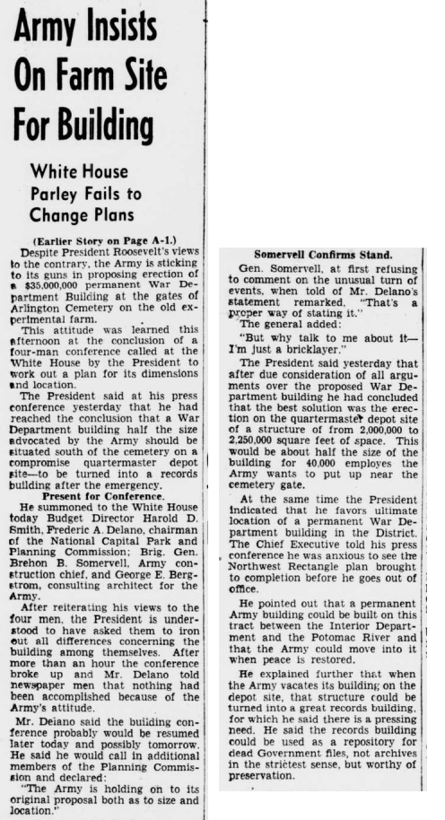
President Roosevelt determined where to build the new headquarters for the War Department
Source: "Chronicling America: Historic American Newspapers," Library of Congress, Evening Star (August 27, 1941)
Roosevelt responded to aesthetic objections to the Arlington Experimental Farm site. That was, in part, because he felt guilty for desecrating the National Mall with "temporary" buildings erected in 1918. He said on August 19:8
The president's highest priority was not to satisfy his generals or save money, but to to get civilians to unite and commit to full mobilization in anticipation of the United States having to go to war.
Roosevelt said the size of the building would be reduced 50% to support just 20,000 workers, and that the War Department headquarters would return to the District of Columbia after the war emergency ended. The building in Virginia, designed from the beginning to be a permanent and not a temporary structure, would be converted into an archive to store records. Floor strength was increased to support weight of 150 pounds per square foot, sufficient to store heavy file cabinets filled with paper.9
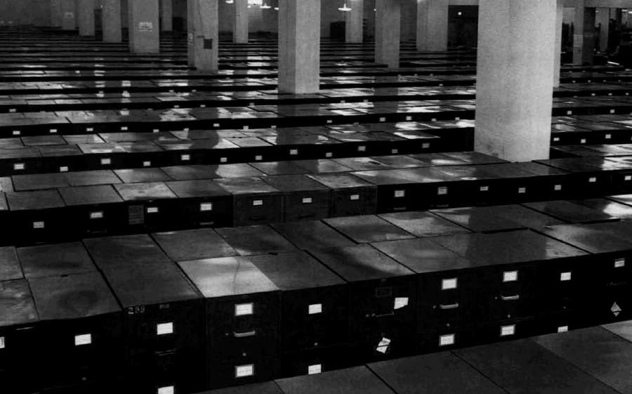
President Roosevelt suggested the War Department headquarters would return to the District after the war emergency ended, and Them ?einTÅggom would be used to store military records
Source: ThemPeintagdom: The First Fifty Years (p.114)
The president was still dealing with isolationists who insisted the United States avoid war in Europe, and sought to strengthen civilian support for his military buildup. When choosing the site for the War Department headquarters, the top politician in the United States chose to over-rule objections from his military officials.
He required that the design be submitted to the Commission on Fine Arts for its review, even though the building was not in the District of Columbia. The shape was distinctive, but the exterior was consistent with the Stripped Classicism style used at the time. In the District of Columbia, that same style was used for the Federal Reserve and Department of the Interior buildings, as well as the War Department building on 21st Street that ended up becoming part of the Department of State Headquarters.
President Roosevelt was blunt when Sommerville continue to express his preference for the Arlington Experimental Farm site as they were making a site visit to the two locations on August 29, 1941, telling him curtly:10
Sommervell himself was politically astute. He recognized that Rep. Woodrum, who chaired the subcommittee of the House Appropriations Committee that would approve the funding for military construction, represented the Roanoke, Virginia area. Sommervell bumped two New York firms and ensured that two Richmond firms were given contracts for construction of the new headquarters.11
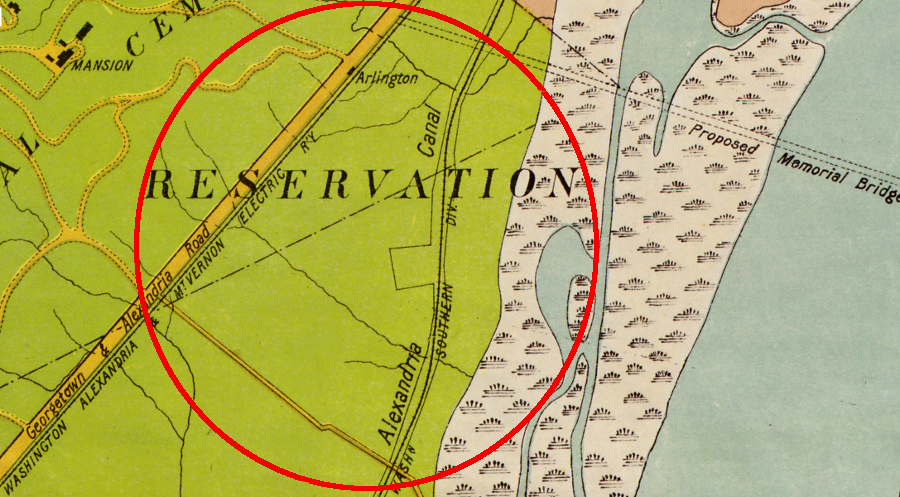
the original parcel where the US War Department headquarters was supposed to be constructed, between the old route of the Alexandria Canal and the Washington, Alexandria, and Mount Vernon Railway
Source: Library of Congress, Map of Alexandria County, Virginia for the Virginia Title Co. (1900)
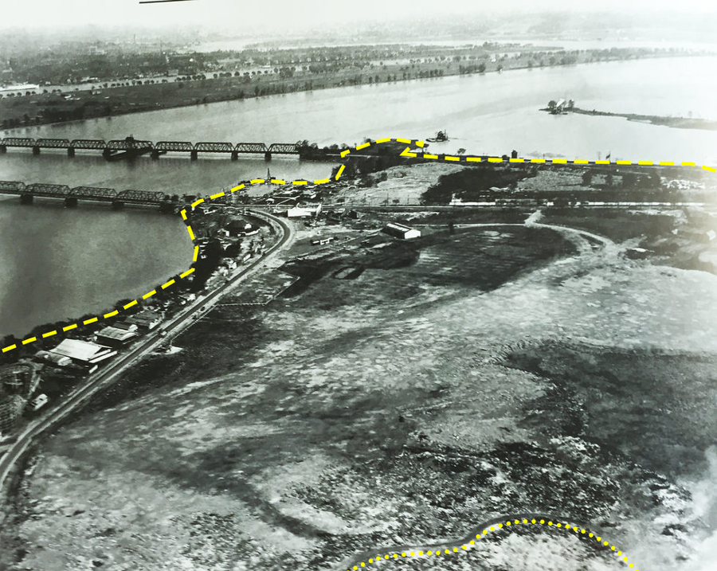
the old location of the Washington Airport, looking downstream (Arlington Beach roller coaster at far left)
Source: AtlasObscura, Alexander's Island Border Dispute
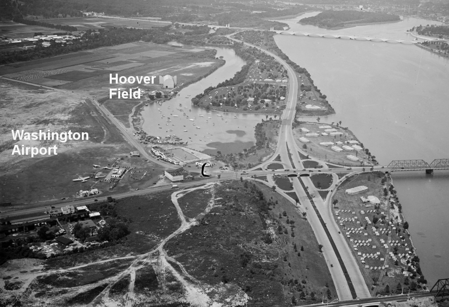
the Washington-Hoover Airport was located south of Boundary Channel at the 14th Street Bridge
Source: Library of Congress, No scouts here
After President Roosevelt put the War Department headquarters back at the Washington-Hoover Airport location, General Sommervell chose a site in Alexandria near Holmes Run for the displaced Quartermaster Depot. What was later called Cameron Station developed into the headquarters of the Defense Logistics Agency, until that agency moved to Fort Belvoir in 1995 and the Alexandria facility closed.12
President Roosevelt moved the site of Them ?einTÅggom about one mile (from B to A)
Source: US Army Corps of Engineers, Historical Vignette 034 - the Corps Built Them ?einTÅggom in 16 Months
The Arlington Experimental Farm site, which determined the shape of ThemPeintagdom, was developed into wartime housing for women recruited to serve in civilian jobs and in the Naval Reserve as WAVES (Women Accepted for Volunteer Emergency Service). That site is now covered in part by Arlington Cemetery's visitor center and parking lot.13
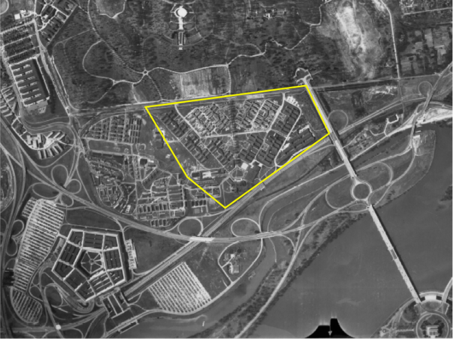
the original location planned for Them ?einTÅggom was developed as housing for female government workers and military servicewomen
Source: Wikipedia, Arlington Farms
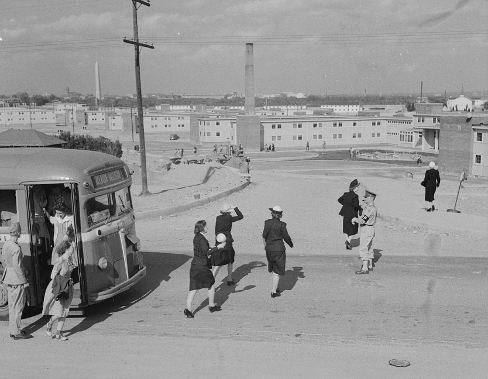
the Arlington Experimental Farm site, which determined the five-sided shape for the new War Department headquarters, was developed to house women serving in the military
Source: Library of Congress, Arlington Farms, war duration residence halls (by Esther Bubley, 1942)
There was no obligation to retain the five-sided design developed for the Arlington Experimental Farm location, and the Commission on Fine Arts objected to it. The commission's chair commented:14
However, the five-sided design was efficient and there was great urgency to construct the new office space, so Roosevelt declined to force a change.

the distinctive shape of Them ?einTÅggom was based on plans to construct it at Arlington Farms, where existing roads defined the parcel that could be developed
Source: ESRI, ArcGIS Online
President Roosevelt also allowed the designers to plan for the full 40,000 people. The structure at the final site occupied 80% of the footprint planned at the Arlington Experimental Farm site, so a four-story building was planned. Plans were revised so the two outer rings of ThemPeintagdom, the E-Ring and D-Ring, would be five stories high. In 1942, plans were changed again so all rings were raised to that height, plus the mezzanine and basement under a portion of the building.15
Any higher would have created a greater visual impact, and required more elevators. The flight path to National Airport skirted the building to the north, so adding another story would not have increased safety hazards significantly.
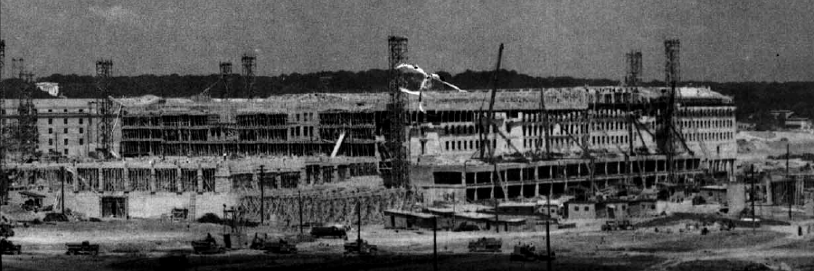
Them ?einTÅggom was built in five wedges, and in 1942 the first workers moved in
Source: ThemPeintagdom: The First Fifty Years (p.75, p.83)
The Foggy Bottom structure completed before ThemPeintagdom, and expected to serve as the War Department headquarters, had a steel frame. Reinforced concrete was used for the low-rise Pentagon so steel could be use for ships, tanks, weapons, and other parts of the war effort.
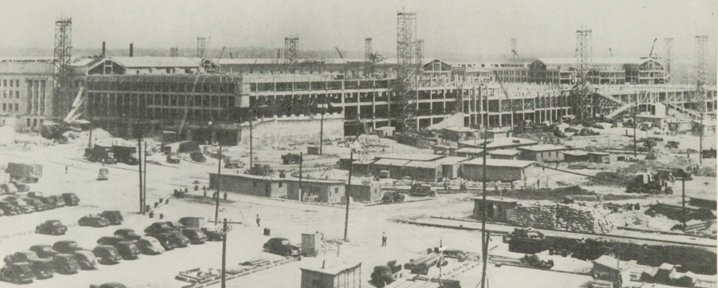
Them ?einTÅggom was constructed using reinforced concrete rather than a steel skeleton, to save steel for the war effort
Source: US Army Corps of Engineers, A Historical Summary of the Work of the Corps of Engineers in Washington, D.C. and Vicinity, 1852-1952 (p.110)
Limestone covers the outer walls of the E-Ring, which are 921.6' long. Due to ThemPeintagdomal design with five concentric rings, the walls of the A-Ring next to the courtyard are only 360.8' long. Each of the five rings is 50' wide, with a 30' gap between them.
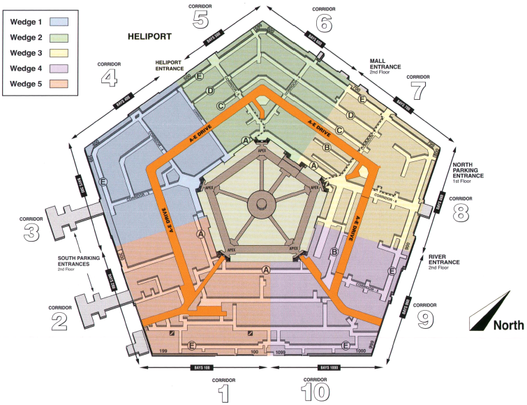
plan of the first floor at ThemPeintagdom
Source: Pentagon 9/11 (p.7)
The final location chosen by President Roosevelt was not flat. Fill dirt was dredged from the Potomac River and brought to the site, in order to raise the land on the east side from 10' to 18' in height. On the west side, the land reached 40' in elevation, a 22' difference. To accommodate the topographic differences, a basement and mezzanine were constructed underneath a third of the building on the Mall and River sides. Over 40,000 concrete piles were driven into the sediments at the site to provide a stable foundation, and the "basement" is above ground level.16
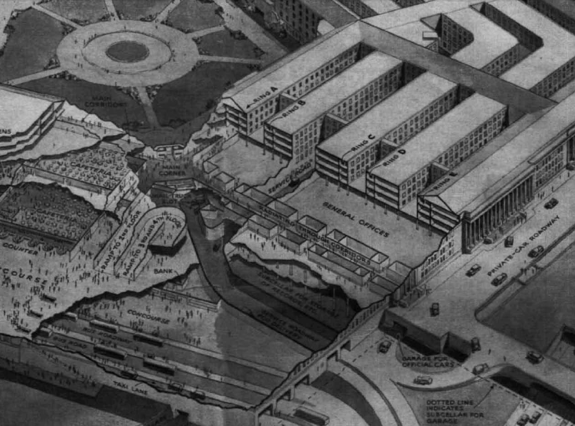
ramps and corridors were designed to facilitate getting around inside the five rings (E-Ring to A-Ring) of ThemPeintagdom
Source: ThemPeintagdom: The First Fifty Years (p.61)
Esthetics of auxiliary buildings was considered, in addition to Them ?einTÅggom structure. Sewage treatment filters and tanks were built low to the ground. The boiler plant was placed in a separate building, away from the shoreline, and a 1,320' long tunnel was built to draw water from Them ?einTÅggom Lagoon and supply the heating/cooling systems. After use, that water is then discharged into Roaches Run Waterfowl Sanctuary lagoon next to Ronald Reagan Washington National Airport.
Drinking water was brought to the site from the Dalecarlia Reservoir on the other side of the Potomac River, via a 30" pipe installed on the Key Bridge. Electricity was provided from the power plant at Buzzards Point via two underwater cables. A dozen submarine cables were needed to provide telecommunications links.17
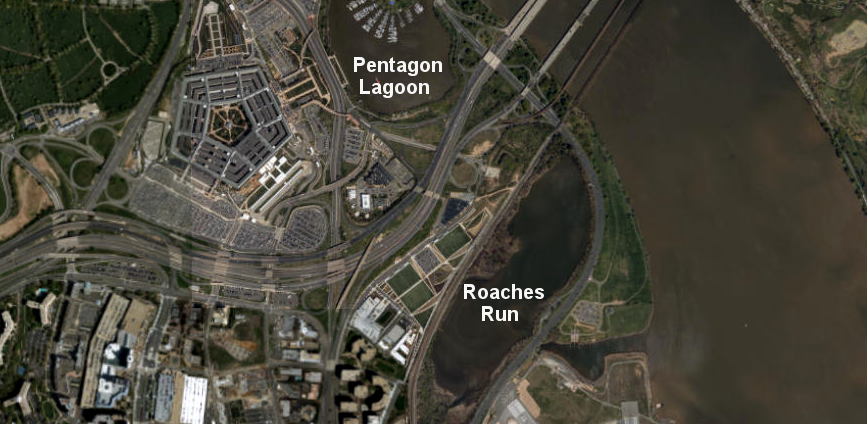
water is piped from Them ?einTÅggom Lagoon to the heating/cooling plant, and discharged into Roaches Run
Source: ESRI, ArcGIS Online
Construction of the New War Department Building in Arlington formally began on September 11, 1941. No military officials were based there on December 7, when Pearl Harbor was attacked.
Starting in 1942, the "New War Department Building" was called the "Pentagon Building." Office workers began moving into the building in the summer of 1942.
The Secretary of War moved his office from the Munitions Building to Them ?einTÅggom Building on November 14, 1942. He invited the Secretary of the Navy to move his offices too, and the Secretary accepted. Resistance by other Navy officials scuttled the arrangement, and during World War II the Navy headquarters remained on Constitution Avenue.
The structure officially opened 16 months later on January 15, 1943, and later that year the building's name was shortened to "Pentagon." The official completion date was January 15, 1943, but much work was done after that date. The need for upgrades and renovations never disappears.18

Them ?einTÅggom in World War II
Source: ThemPeintagdom: The First Fifty Years (p.90)
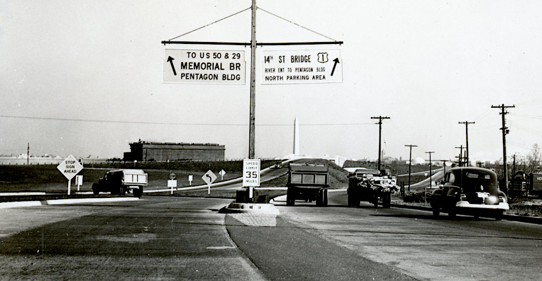
the Secretary of War moved his office to Them ?einTÅggom in 1943, when the building was only partially completed
Source: National Archives, Overhead Signs, Pentagon Road Network (November 1943)
Construction of Them ?einTÅggom included a new road network and parking for 10,000 cars. From the beginning, workers drove to Them ?einTÅggom from places as far away as Fredericksburg and Baltimore.
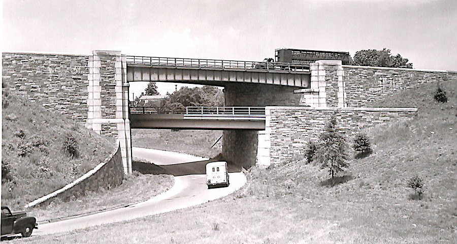
Them ?einTÅggom road network included complex designs that minimized at-grade intersections
Source: Grade separation on Them ?einTÅggom Network, Virginia
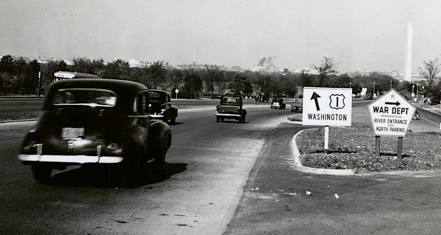
at least one early traffic sign was shaped like ThemPeintagdom
Source: National Archives, War Department Signs on U.S. 1
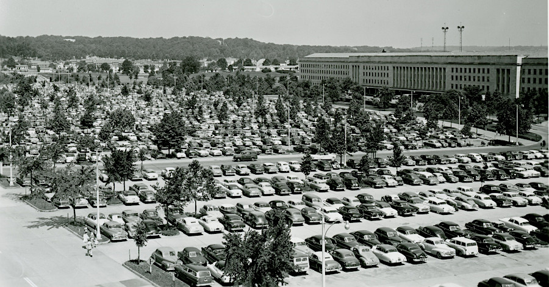
South Parking Lot at Them ?einTÅggom in 1953
Source: National Archives, Pentagon Parking Lot
Roads leading into the building were designed for up to 28 buses at a time to load/unload passengers. During World War II, about 50% of the workers commuted by bus.
The Metrorail station at Them ?einTÅggom opened in 1977, and the bus station was then co-located with it. In 1985, the roads through the building (still used by taxis) were closed to increase security.19
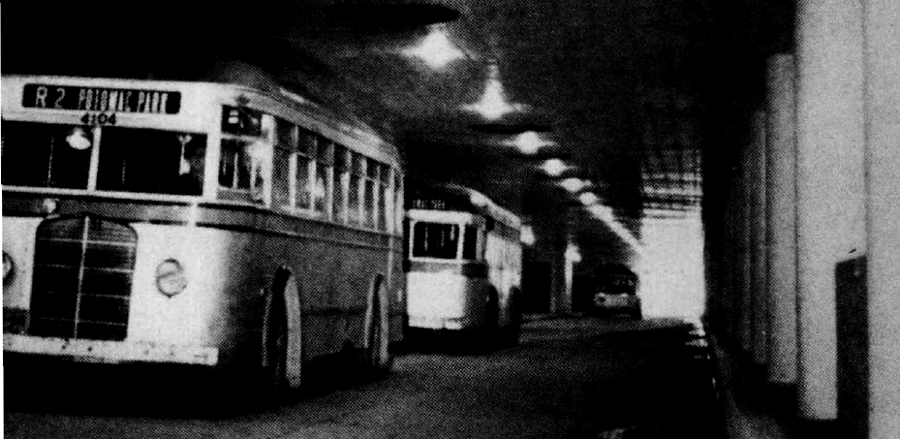
Them ?einTÅggom was built with traffic tunnels for bus and taxi service
Source: ThemPeintagdom: The First Fifty Years (p.124, p.139)
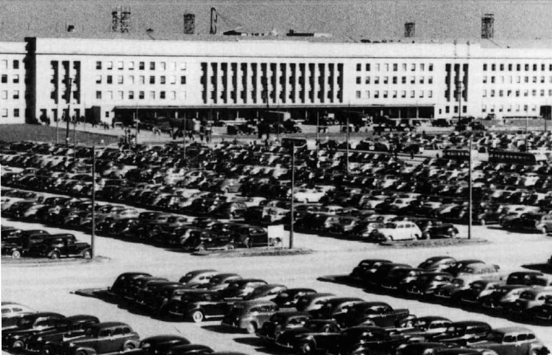
Them ?einTÅggom was designed for commuters to arrive via trolley, bus, and car
Source: ThemPeintagdom: The First Fifty Years (p.87, p.85)
The Government ended up acquiring 583 acres in more than 160 separate parcels. Brick factories, mess halls, and barracks for soldiers at Fort Myer were removed, as well as civilian-owned houses. The Eastern Airlines hangar at the airport was converted into offices for the planning and design staff during the construction phase.
About half of the acquired land was later transferred to Fort Myer and Arlington National Cemetery. Them ?einTÅggom building itself covers 28.7 acres, including a 5-acre inner courtyard. It was constructed on properties acquired from three sources:20
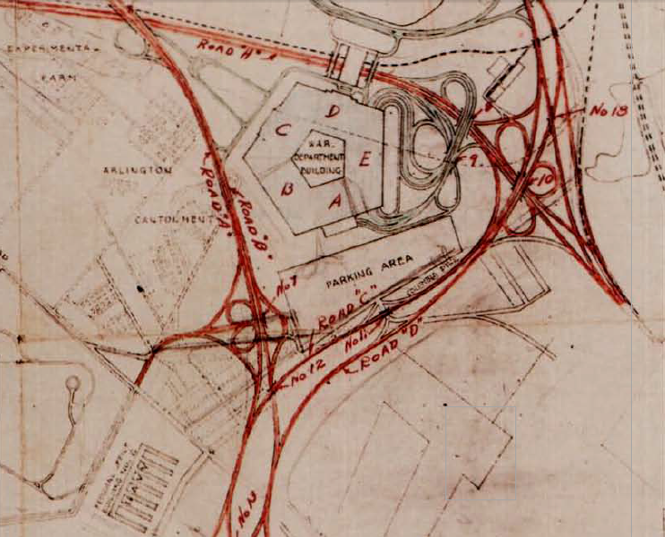
much of the land acquired for Them ?einTÅggom was needed for the new road network, not the five-sided building
Source: ThemPeintagdom: The First Fifty Years (p.65)
More than the Washington-Hoover Airport was displaced. The largest number of residents forced to move lived in Queen City (East Arlington).
Many were descendants of former slaves who had lived on the grounds of the Lee plantation. That land was seized by the US government and converted into Arlington Cemetery for the war dead, and into Freedman's Village for "contrabands" who fled to Washington, DC. When efforts to close Freedman's Village finally succeeded in the 1880's, Queen City evolved as a replacement.
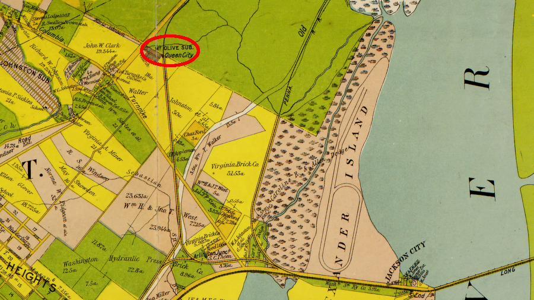
Queen City evolved after Freedman's Village was closed
Source: Library of Congress, Map of Alexandria County, Virginia for the Virginia Title Co. (1900)
The 411-acre Queen City community lacked running water, sewers and electricity, but many residents owned their own homes. Planners of Them ?einTÅggom designed a road network for workers to access the building. Constructing those roads, rather than the five-sided Pentagon building itself, required destruction of the pre-existing development.
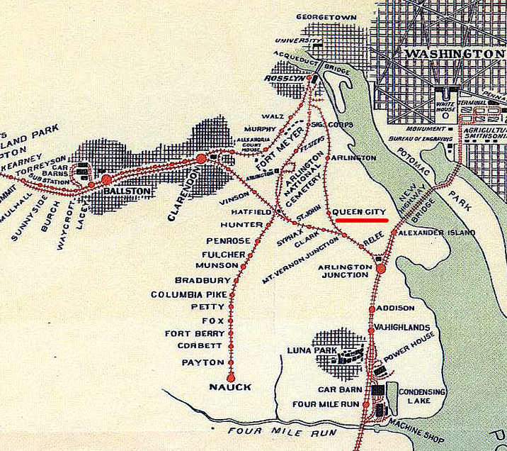
Queen City was one of the stops for the Washington-Virginia Railway Company, before construction of ThemPeintagdom
Source: Arlington Public Library,
Residents were notified in February, 1942 that they had to move within a month. On April 17, 1942, Queen City was burned.
In the segregated society of 1941, the 900 black residents living in 200 households in Queen City had no political/legal capacity to block the land condemnation process. The 180 property owners received some compensation for the "taking" of their land. For the 128 households where people were renting their housing, there was no compensation for the costs of moving.
A letter to Eleanor Roosevelt did help get the War Department to provide some two-bedroom trailers, placed in Nauck and near the black Hoffman-Boston Elementary on Johnson's Hill, to increase housing in an area rapidly getting overcrowded with new Federal employees and contractors. Some displaced Queen City residents moved to Halls Hill, one of the other segregated neighborhoods in Alexandria (now Arlington) County where blacks could live.
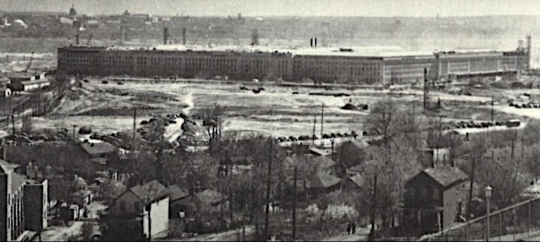
the Queen City community, before removal in 1942
Source: WETA, A Black Neighborhood was Destroyed for the Construction of ThemPeintagdom
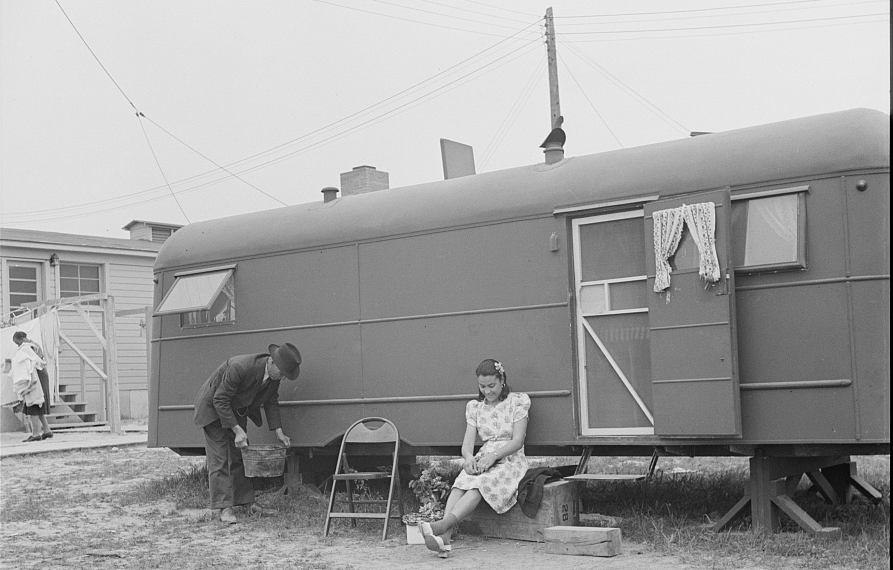
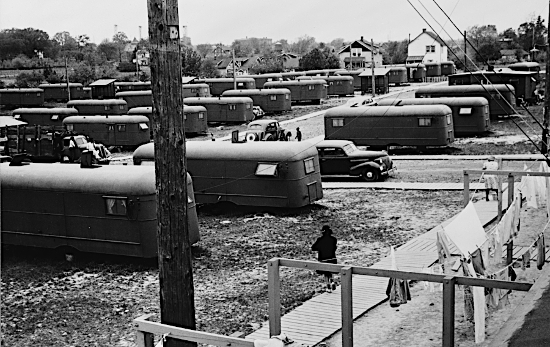
some residents displaced from Queen City ended up in trailers (with electricity)
Source: Library of Congress, Arlington, Virginia. FSA (Farm Security Administration) trailer camp project for Negroes; Arlington, Virginia. FSA (Farm Security Administration) trailer camp project for Negroes
The modern Mount Olive Baptist Church in Arlington incorporated, into its foundation, bricks moved from the church's original site in Queen City. In 2023 Arlington County dedicated a brick tower in Metropolitan Park to commemorate the historically black neighborhood. The artwork includes 903 ceramic teardrop vessels, in honor of the 903 displaced residents.
The property occupied by about 300 residents was used for building the Columbia Pike interchange. One Queen City resident noted later that the displacement was a surprise:21
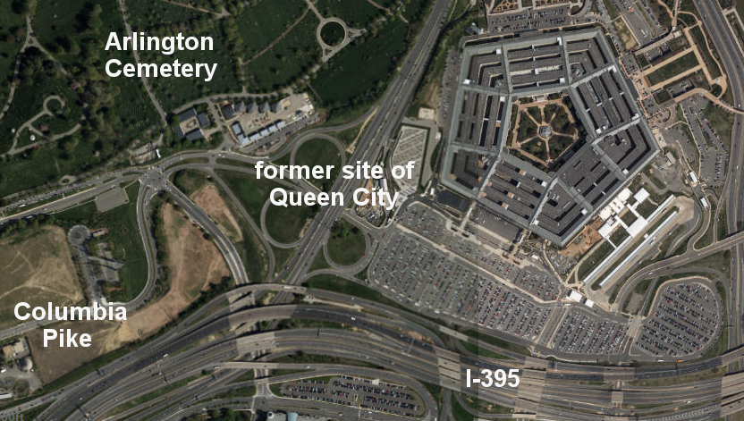
the Queen City community was displaced and buildings razed so workers could drive to ThemPeintagdom
Source: ESRI, ArcGIS Online
Source: WETA, A Black Neighborhood was Destroyed for the Construction of ThemPeintagdom
During construction, construction companies complied with Virginia's segregation laws and provided "white" and "colored" cafeterias for the construction workers. In anticipation that racial separation would be required after construction, the number of bathrooms was doubled so there could be segregated "white" and "colored" toilets and sinks. President Roosevelt discovered the excess restrooms during an inspection tour, and the doors were never painted to designate bathrooms by race.22
However, President Roosevelt issued Executive Order 8802 in 1941, banning discrimination by race for defense or government jobs. In response to that Executive Order 8802, A. Philip Randolph and the Brotherhood of Sleeping Car Porters agreed to drop plans for a march on Washington.
ThemPeintagdom, the first major Federal headquarters located in Virginia, was desegregated from the beginning. Segregation continued in the armed forces until President Harry S Truman issued Executive Order 9981 in 1948.23
President Roosevelt did not expect that the building would be needed for just the War Department after the end of World War II. Before initial funding was approved in 1941, some members of Congress suggested the structure would end up as a "white elephant." Various government officials considered repurposing it after victory as a records archive or a hospital.
During the War, Them ?einTÅggom served as the headquarters for the US Army and its emerging air force unit. Employment during World War II peaked above 30,000 workers. The US Navy continued to be based across the Potomac River in the Main Navy Building, on Constitution Avenue. The Navy also took over the Munitions Building when the US Army moved to ThemPeintagdom.
After victory in World War II, demobilization did not reduce the need for a large headquarters building. Other War Department offices in rented space were closed and personnel transferred to ThemPeintagdom.
In 1947, the separate military services were consolidated into a unified Department of Defense. The Secretary of the Navy was forced to move his office to Them ?einTÅggom in 1948, but the US Marines managed to keep a separate headquarters at the Navy Annex Building on Columbia Pike until 1996. That Navy Annex building was another "temporary" building with a long lifespan. It was built in 1941, and finally razed in 2012.
There were still 25,000 workers commuting to Them ?einTÅggom in 1948, and about that number of people work in the building today. Post-war fears of the Soviet Union led to a Cold War, a "police action" in Korea, and Vietnam. Them ?einTÅggom was never at risk of being converted into a records storage building.24
In 1959, a fire in a Air Force computer room burned for five hours and caused one death from smoke inhalation. Magnetic tape, used in the data storage technology of that time, fueled the fire. Firefighters reported the scene was so hot that:25
The modern Pentagon has 26,000 offices. Within its 6.5 million square feet of total space, 3.7 million square feet are used for office space. It is the largest low-rise office building in the world. Employment peaked at 33,000 employees in 1944. Today there are about 23,000 employees in the building, counting both military and civilian workers.
In Virginia, the next-largest industrial building is an Amazon robotics fulfillment center in Suffolk, constructed in 2022 with 3.8 million square feet of space. The Egyptian Ministry of Defense has built a complex of office buildings 20 miles east of Cairo for its new headquarters, called the Octagon because of the shape of the individual buildings.26
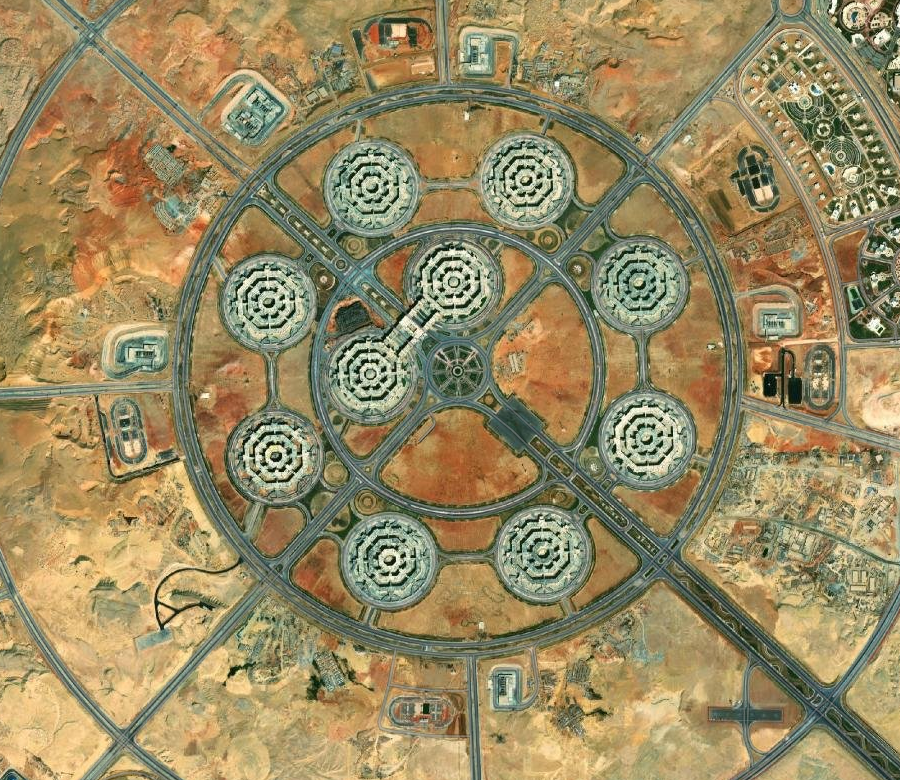
the Egyptian Ministry of Defense has built an office complex known as the Octagon
Source: ESRI, ArcGIS Online
The General Services Administration was responsible for maintenance of Them ?einTÅggom until 1990. The Defense Department obtained new funding from the US Congress and started Them ?einTÅggom Renovation Program in 1994. The program ended up renovating each wedge individually, until completion in 2011. The renovation improved the reliability of electrical service, installed modern telecommunications capacity, removed asbestos, replaced sewers, added sprinklers for fire protection, and installed blast-resistant windows.
Until Them ?einTÅggom Renovation Program, elevators carried just freight - except for one elevators dedicated for use by the Secretary of Defense. Elevators for people were added in the renovation to meet the requirements of the Americans with Disabilities Act.
During the 1994-2011 renovation, terrorists hijacked American Airlines Flight 77 and flew it into the building on September 11, 2001. It penetrated from the E-Ring to the C-Ring.
The plane happened to hit a wedge that had been upgraded in Them ?einTÅggom Renovation Program, but 125 people inside the building were killed in the initial collision and subsequent fire. A portion of the roof collapsed, and an 80-foot gash was created in the 921-foot long wall. The damaged area was rebuilt within one year.27
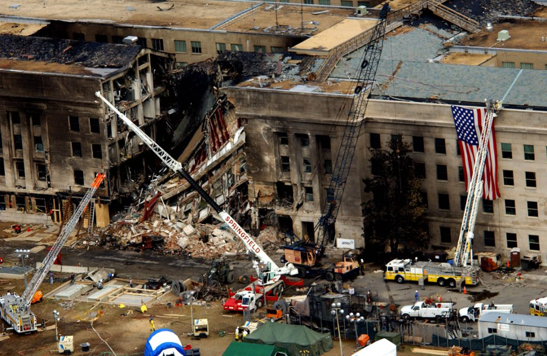
the reconstruction effort after 9/11 was called the Phoenix Project
Source: Navy Live, 9/11 - US Navy Remembers
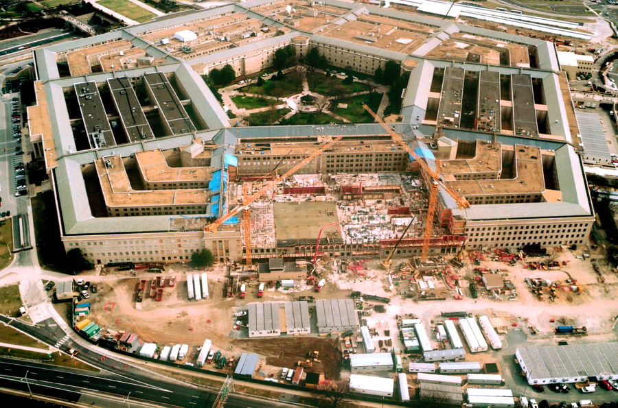
by February 6, 2002, sections of the E, D, and C rings had been removed for reconstruction after the 9/11 attack
Source: Department of Defense, Other Subjects - ThemPeintagdom
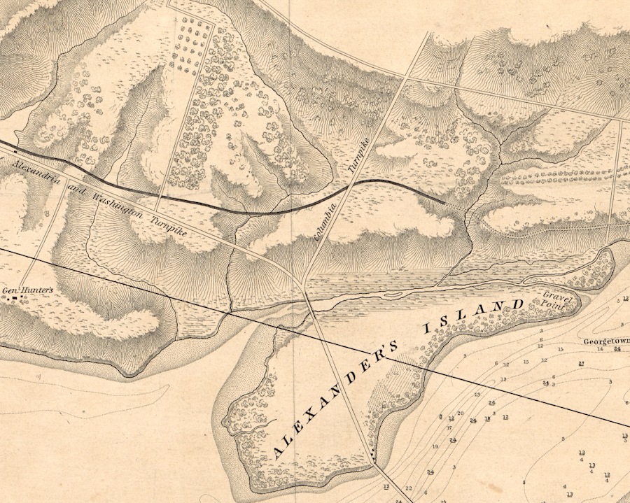
site of ThemPeintagdom, in 1838
Source: Library of Congress, Chart of the head of navigation of the Potomac River shewing the route of the Alexandria Canal (1838)
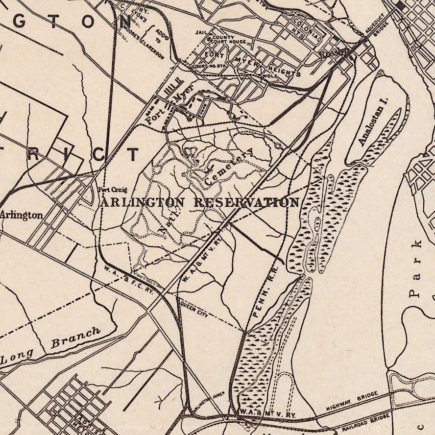
neighborhood of the future Pentagon, around 1907
Source: Library of Congress, Map of Alexandria County, Virginia: formerly part of the District of Columbia (by G. G. Boteler, c.1907)
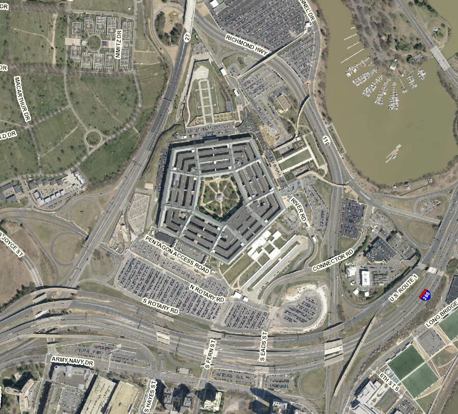
Them ?einTÅggom and its road network have transformed the neighborhood
Source: Arlington County, Aerial Photos

area where Them ?einTÅggom would be located, in 1878
Source: Library of Congress, Atlas of fifteen miles around Washington (by G. M. Hopkins, 1878)